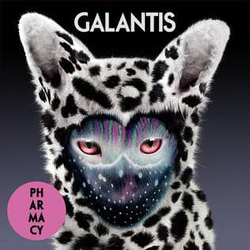

Spotify/Apple Music
View more of music by Galantis by visiting their artist profile on Spotify or Apple Music.

I am a huge EDM or electronic music fan. One of my favorite artists is Christian "Bloodshy" Karlsson, also known as Galantis. I have been a fan of theirs since their inception in 2013. One of the biggest reasons why I love Galantis is honestly their album covers. They are so out of this world featuring these combinations of various flora and fauna. Below you can view my top 5 favorite hits from Galantis along with other information.
Galantis used to be made of two producers, Christian Karlsson and Linus Eklöw. They split in 2017, but Christian has kept the music alive with Galantis since then. Some of their top hits include Runaway (U and I), Peanut Butter Jelly, and Bang Bang. Known for incorporating acoustics and piano for the beginning intros to many of their songs, they have revolutionized the electric music genre. Galantis performs at EDC (Electric Daisy Carnival) and Ultra Music Festival, but also tours around the world.
Galantis used to be a duo consisting of Christian Karlsson and Linus Eklöw. Prior to the formation of the band/duo, Christian worked with Miike Snow, co-wrote, and co-produced tracks for many popular artists we know today including Katy Perry, Britney Spears, and Madoona to name a few. Linus on the other hand, also known as Style of Eye, was famously know for co-writing and producing Icona Pop's very popular I Love It featuring Charli XCX. Christian and Linus both met sometime in 2007 in Stockholm at Karlsson's studio

In 2012, that is when things really heated up and came together. They stopped a loop-based and software approach, which used to be one of the most common ways for modern dance music to be made, and swapped to beginning a song on guitar or piano. From there, the tracks flowed. It was at that moment that they realized they had formed Galantis.
In 2014, they had their first big international success with their single Runaway (U & I), which is part of their album for Pharmacy. The single because certified Gold in Finland, 3x Gold in the Netherlands, and Platinum in Norway and Sweden. Unfortunately, the duo came to an end in 2017 when Linus chose to walk away shortly after their album, The Aviary, released. Linus did stay on and did appearances in live performances and music videos up until 2021. Since then, it has been Christian "Bloodshy" Karlsson taking the helm and making Galantis what it is today (Wikipedia contributors, 2024).
View more of music by Galantis by visiting their artist profile on Spotify or Apple Music.
Want to see their official website?
Click Here